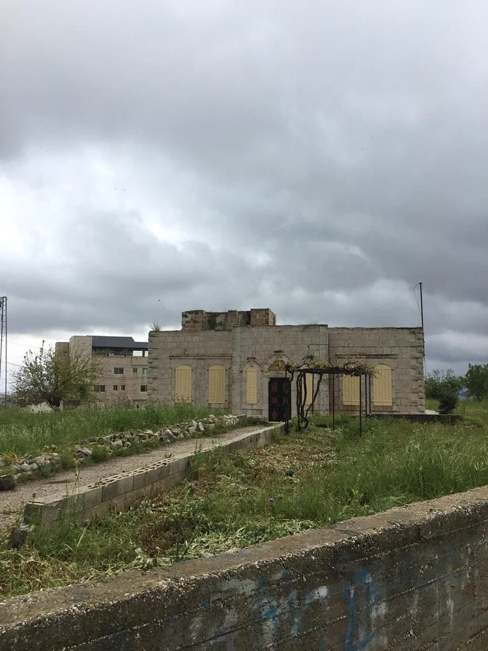
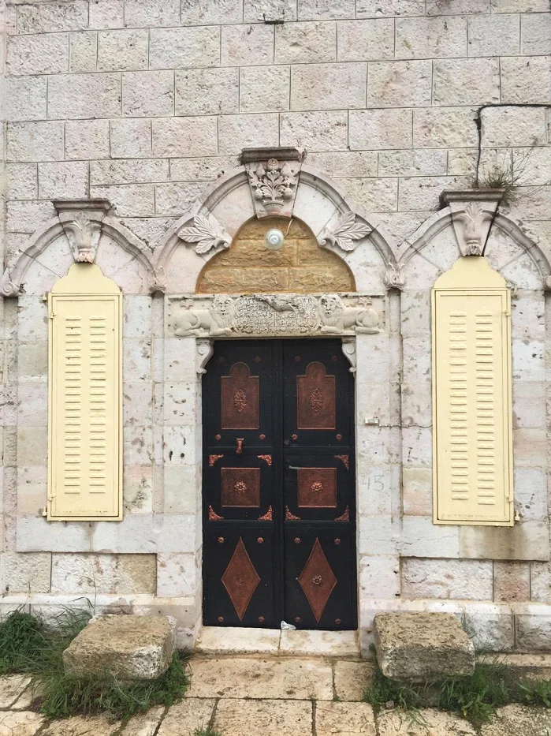
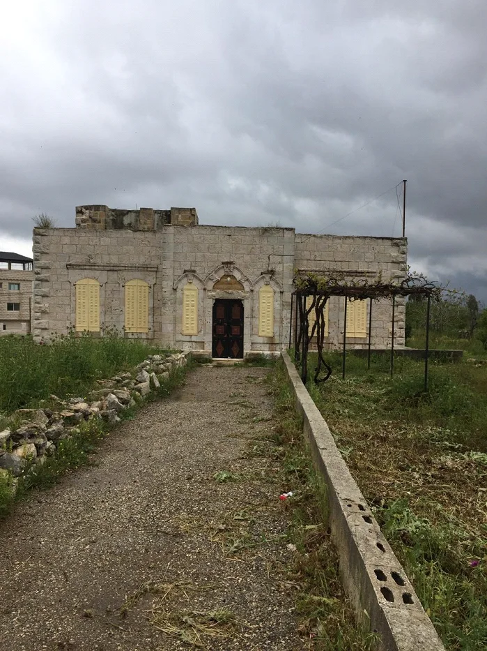
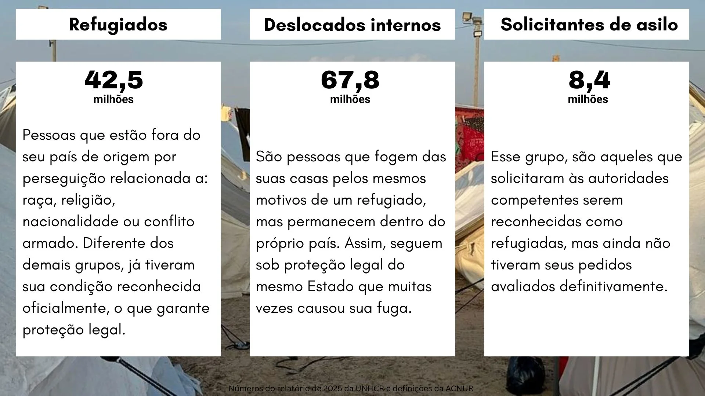

Depois de décadas morando no Brasil, o palestino Yacoub Musa Sghaier decidiu voltar para o país em que nasceu. Ele e sua esposa deixaram a América do Sul para trás, onde tinham filhos, netos e amigos, e gastaram muito dinheiro para construir uma bela casa em Beitunia, na Cisjordânia.



Nessa casa, eles moraram por quatro anos.
Uma noite, sem grande cerimônia, virou para sua esposa e falou que no dia seguinte iria para Jerusalém tirar o passaporte e voltar para o Brasil. E assim fez. A explicação que deu para a filha foi: "Eu não quero morar na Palestina. Quero voltar para o meu país, para o Brasil."
Para palestinos espalhados pelo mundo, a palavra "voltar" carrega um significado diferente. Depois da Segunda Guerra Mundial, seguidos pela criação do Estado de Israel, durante décadas, migrantes israelenses se estabeleceram em terras árabes, mas no local já existia uma população estabelecida, gerando um grande conflito. Esse movimento levou à diáspora de inúmeros árabes que já moravam naquele território, os palestinos.
No período que ocorreu a Nakba, em 1948, foram cerca de 700 mil palestinos expulsos de suas terras, segundo o Instituto Humanitas Unisinos (IHU). E em 2025, segundo o ACNUR, cerca de 5,9 milhões de refugiados palestinos estavam sob amparo da UNRWA.
Esse número engloba três grupos: refugiados, solicitantes de asilo e deslocados internos (IDPs).

No Brasil, essa comunidade tem uma presença histórica, mas ainda difícil de quantificar. Dados do Instituto Brasileiro de Opinião Pública e Estatística (IBOPE) e da Federação Árabe Palestina do Brasil (FEPAL) variam entre 622 mil e 200-300 mil palestinos, respectivamente.
Essas variações não representam um erro de um dos lados, mas sim a diferença de análise e metodologia do mesmo estudo. A pesquisa base do IBOPE (2019) foi feita com 2.002 entrevistados em 143 municípios e tinha como objetivo principal o mapeamento da comunidade árabe brasileira como um todo. Ao distribuir os entrevistados árabes por nacionalidade de origem, identificou que palestinos representavam 5% desse grupo. Essa porcentagem sobre os 11,6 milhões de árabes estimados no Brasil resulta em aproximadamente 622 mil pessoas. É importante destacar que esse percentual foi extraído de uma subamostra de 112 entrevistados árabes.
Já a FEPAL optou por utilizar os percentuais obtidos em outra parte do mesmo questionário, onde palestinos apareceram em 2% das primeiras menções espontâneas de origem e em 3% quando consideradas todas as menções ao longo da entrevista. Assim, a estimativa fica entre 200 mil e 300 mil.
Existe uma dificuldade em relação à quantificação de palestinos no Brasil, principalmente considerando o fato de que muitos imigrantes chegaram com documentação de outro país.
Mas, para o presidente da FEPAL, Ualid Rabah, o problema vai além: "Essa dificuldade decorre da ausência total de estudos sobre os palestinos no Brasil e o controle dos sionistas da narrativa acadêmica."
Sobre isso, Vinícius Rodrigues Vieira, doutor em Relações Internacionais pela Universidade de Oxford e professor da FAAP, explica como, no mundo acadêmico, a força política também reflete em dados e estudos. "Esse é um processo normal, é legítimo, é importante dizer, e é esperado. Qual é o problema? Algumas comunidades, como tudo no mundo político, são mais fortes do que outras."
No cenário dos palestinos, o professor afirma haver essa desvantagem do grupo: "Nesse caso específico, tem uma grande desvantagem para os palestinos, até porque os árabes muçulmanos com mais recursos, tipo sauditas, eles não vão comprar 100% a causa palestina." Criando assim, um buraco na pesquisa e nos estudos sobre o grupo. Entretanto, o professor destaca a legitimidade do processo, que não fica reservado apenas para os palestinos: "tanto um lado quanto o outro, é legítimo, porque é como esses lobbies étnicos se organizam ao redor do mundo, seja em democracias, seja em ditaduras."
Mas a falta de estudos e a dificuldade de mensurar o exato tamanho da comunidade não significam a ausência dela. No Brasil, a trajetória dos palestinos marcou regiões do país, onde, ao longo de décadas, o grupo se instalou em diversas cidades e estados do maior país da América do Sul.
Durante a apuração desta reportagem, um município foi mencionado repetidamente por entrevistados e lideranças comunitárias: Santana do Livramento. Localizada na fronteira com o Uruguai, no Rio Grande do Sul, abriga uma das maiores e mais conhecidas comunidades palestinas do Brasil.
Na fronteira
"Outro dia, uma árabe que veio da Palestina estava falando que, na Palestina, Santana do Livramento é famosa pela recepção que nosso povo aqui recebe das pessoas de fora", conta Miassar Baja, palestina que vive em Livramento, filha de Yacoub Musa Sghaier.
Ela se mudou para o Brasil há 60 anos e, desde então, só voltou uma vez para a Palestina. Seu pai veio morar aqui desde que ela tinha alguns meses de vida e, até seus 8 anos, Baja morou com seus avós. Mas, por volta de 1961, ela desembarcou no Porto de Santos depois de 28 dias de viagem em um navio.
Yacoub saiu de Beitunia, na Cisjordânia ocupada, e veio para o país em 1953 pelo mesmo motivo que a maioria dos palestinos saíram de suas terras originárias: "Tinha guerra na época, e muita pobreza. Então não tinha, sabe, perspectiva de melhorar", conta sua filha, Miassar.
Depois da família morar em alguns lugares pelo Brasil, eles acabaram ficando em Livramento, onde uma população de árabes se instalou e criou uma comunidade. Impulsionada pelo comércio, o grupo acabou se fortalecendo lá e é reconhecido internacionalmente: "Tem uma embaixadora da Palestina no Uruguai... e ela sim ficou impressionada com a recepção que todos fazem para ela", explica Baja.
Segundo a FEPAL, o Rio Grande do Sul é um dos estados com o maior número de palestinos do Brasil. E um dos locais que possui uma grande quantidade de descendentes e imigrantes árabes é o município no extremo sul, Santana do Livramento.
Fronteira com o Uruguai, a região é conhecida pela presença da comunidade árabe. Um dos motivos pelos quais atraíram os imigrantes tanto para o sul do Brasil quanto para os países vizinhos foi a prosperidade do comércio. De acordo com o presidente da FEPAL, Ualid Rabah, essas comunidades começaram a se formar a partir da Nakba, especialmente a partir dos anos 50 e 60 e, depois, com um pico no ano de 67, por conta da Guerra dos Seis Dias.
Rabah também defende que a escolha do Rio Grande do Sul se explica pela existência prévia da comunidade palestina na região. "Essas comunidades vão para o Rio Grande do Sul porque já existia um rudimento da comunidade palestina, especialmente na Grande Porto Alegre." Como consequência, no local existiam mais oportunidades de comércio que, segundo o secretário jurídico da FEPAL, Nasser Judeh, também foi um dos motivos que fizeram os palestinos se instalarem nas cidades gaúchas: o comércio que as cidades da fronteira faziam com o Uruguai.
Chamados de mascates, quando os palestinos vinham ao Brasil, o trabalho de vendedor ambulante se tornou uma das formas mais práticas e comuns de ganhar dinheiro.
Segundo o presidente da FEPAL, essa pré-existência de árabes no local facilitava para que os palestinos recém-chegados tivessem acesso à mercadoria concedida "no que hoje poderíamos chamar, pelo que temos hoje, de mercadoria entregue para depois ser paga ou coisa parecida. E, com isso, eles poderiam exercer a vida de mascates, vendendo produtos e se estabelecendo depois como comerciantes", explica Ualid.
A reportagem fez contato com a prefeitura de Santana do Livramento, que confirmou o tamanho e a importância da comunidade. Entretanto, nenhuma análise ou pesquisa existente comprova o número exato de palestinos que moram lá.
Pouco a pouco, a integração dos árabes nas terras brasileiras foi sendo conquistada pelo grupo, que criou raízes e passou a fazer parte da economia e a moldar a cidade em que viviam.
Até hoje as raízes árabes no comércio se mantiveram. Segundo uma publicação da Associação Comercial e Industrial de Uruguaiana (ACIU), cidade no extremo oeste do Rio Grande do Sul, a maioria dos árabes do município tem como fonte de renda principal a atividade comercial, sendo elas lojas de confecção, calçados e bazar, além de supermercados.
Essa constante troca com os países vizinhos fez com que os palestinos criassem uma forte relação com os árabes das cidades fronteiriças. Para se ter ideia, a convivência entre os moradores do sul e do Uruguai foi tanta que o primeiro jornal binacional da região de fronteira do Brasil, é de Santana do Livramento. O chamado A Plateia escreve tanto em português quanto em espanhol.
Para os palestinos, que possuem uma cultura muito diferente da dos brasileiros, foi de extrema importância a presença de árabes no local, especialmente para não perder os costumes e as tradições da cultura. Usando um hijab em uma ligação de vídeo online, Miassar explica: "Nós não estamos na Palestina, na nossa terra, mas mesmo aqui no Brasil a gente procura manter os costumes, sabe?"
A Mesquita de Santo Ângelo é um grande símbolo dessa forte presença árabe no território. "Aqui, nós temos uma mesquita, a colônia é muito grande. Inclusive, quando vem um padre, quando eles vêm de outro país, eles ficam na mesquita e ficam impressionados com a comunidade da Palestina aqui." A mesquita também é um ponto central da organização comunitária da cidade. Quando ocorreram as enchentes em 2024 no Rio Grande do Sul, ela serviu de ponto de coleta nas campanhas de doação.
Para a comunidade árabe, é importante existirem esses locais para não perderem suas tradições e o contato com a religião: "A maioria procura também assim não perder, sabe, a cultura, a essência, o costume", explica a palestina.
Mesmo assim, o apego pelo Brasil passou a ser tanto para esse grupo que Miassar explica a tentativa falha de seu pai, Yacoub Sghaier, de voltar para a Palestina: "Os meus pais, há 30 anos, depois de morar muitos anos aqui, voltaram para a Palestina. Meu pai gastou 100 mil dólares para reformar uma casa, porque lá as casas são de pedras. E ele reformou tudo." Eles só ficaram quatro anos lá e, uma noite, resolveram voltar para o Brasil. Ela parafraseia o pai: "Eu não quero morar na Palestina, quero voltar para o meu país, para o Brasil."
A luta por raízes na maior metrópole da América Latina
A comunidade palestina em São Paulo é também uma das maiores do país.
Baraah, nascida em Gaza, na cidade de Rafah, hoje em dia mora na maior metrópole do Brasil, mas já passou tanto por Santana do Livramento quanto pelo Rio de Janeiro.
Aos 9 anos, ela e sua família vieram encontrar o pai, que já estava no Brasil. Eles escolheram o país pois seu pai o considerava um lugar pacífico, e procuravam uma condição de vida melhor. Quando chegaram, ficaram em um primeiro momento no Rio de Janeiro. Logo em seguida, mudaram-se para Santana do Livramento.
"A gente ficou só um ano no Rio Grande do Sul. Tinha uma comunidade palestina lá na fronteira, numa cidade chamada Santana do Livramento." Mas, no ano de 2000, eles acabaram voltando para o Rio de Janeiro.
As diferenças entre sua vida na Palestina e no Brasil marcaram Baraah desde o começo. Nessa mudança para o Rio, ela acabou perdendo seu irmão mais novo de forma trágica. "Ele faleceu afogado na piscina do prédio, porque a gente não sabia o que era uma piscina, praticamente." Ela define esse momento como um divisor de águas em sua vida.
Após a perda, eles decidiram se mudar e vir morar em São Paulo: "Meu pai também queria que a gente estudasse de novo. Estudasse numa escola islâmica que aqui tem, na Vila Carrão. Tem uma comunidade árabe aqui em São Paulo muito grande, aí ele queria que a gente se aproximasse da cultura, da religião", explica a palestina.
Baraah ficou por dois anos sem estudar, pois seu pai não queria que ela frequentasse uma escola com meninos: "Na Palestina, eu estudava só com meninas. (...) Tinha um pouco de meninos, mas, quando não tinha vaga mais na escola de meninos, aí eles vinham pra nossa escola, mas não era de praxe."
Depois disso, as coisas foram ficando mais complicadas. Com poucas oportunidades de trabalho, seu pai acabou fazendo contrabando de linhas telefônicas, o que o levou a ser preso logo depois da perda de seu irmão.
Sem forma de sustento, ela relata que seu pai insistiu para a família voltar à Palestina. Sua mãe recusou e, depois de muitas brigas e discussões, eles continuaram no Brasil.
Baraah explica o motivo de sua mãe não querer voltar: "Ela achava que a vida lá era muito cruel, muito dura. Então, ela foi contra o meu pai. Ela foi muito firme, ficou e pagou um preço muito alto. Chegou a morar na rua mesmo. E ela ficou mesmo, tipo, ela dormiu na rua, no chão."
E não foi só a mãe; Baraah e seus irmãos também chegaram a morar na rua por um tempo, mas acabaram ficando em um albergue. Isso foi por volta de 2005, quando Baraah estava prestes a completar 15 anos; eles moraram em torno de cinco anos no Lar Sírio.
Em 2015, quando a última criança do orfanato completou 18 anos, o Lar Sírio se tornou uma instituição escolar, e funciona desta maneira até hoje.
Com vinte anos, Baraah conseguiu tirar sua família do abrigo: "E aí a gente saiu do abrigo, eu abri uma casa, comecei a trabalhar, coloquei meus irmãos, tirei meus irmãos do abrigo e aí eu casei com um homem brasileiro, tive um filho que hoje tem 14 anos", conta.
Mesmo morando há anos no Brasil, a conexão e o amor pelas terras palestinas não foram deixados de lado e foram repassados para seu filho. Baraah conta que quando ele foi para a escola, falou para seus colegas logo de início que havia duas coisas das quais ele não aceitava brincadeira: o São Paulo Futebol Clube e a Palestina. "Foi aí que eu percebi que eu tinha plantado no coração dele o amor pela Palestina", relata.
E o laço com o território não fica apenas na fala e na memória. Todo ano, durante o Ramadã, ela organiza uma campanha de arrecadação para mandar dinheiro para seus familiares em Gaza. Em 2025, ela conta que ultrapassaram a meta inicial e ajudaram cerca de 11 famílias.
"Falar é muito importante, mas as mãos que se ajudam têm que ter algo na prática", ela afirma.
Atualmente, Baraah acabou de se formar em Letras pelo Senac. Seu sonho é dar aulas de português para estrangeiros: "É a minha missão de vida, porque eu aprendi o português na marra. Minha mãe até hoje não fala, não escreve muito bem. Quer dizer, ela não escreve nada; falar, ela fala alguma coisa, afinal são 27 anos aqui. Então, eu tenho vontade de ensinar português para quem, como eu, um dia chegou como refugiado."
O sonho da palestina, na verdade, representa uma das maiores dificuldades para os refugiados: a dificuldade do processo de naturalização, que envolve o domínio da língua portuguesa.
A burocracia de pertencer
Existe uma diferença extremamente grande entre um refugiado e uma pessoa naturalizada no Brasil.
Baraah conseguiu se naturalizar, ou seja, ela se tornou brasileira perante a lei, tendo todos os direitos previstos na Constituição, segundo a advogada Carla Mustafa, internacionalista e presidente da Comissão dos Direitos dos Imigrantes e Refugiados da OAB-SP, que aponta essa como a maior diferença entre uma pessoa que é migrante, solicitante de refúgio e refugiada.
Hoje, a palestina tem acesso ao sistema de educação, saúde e segurança. Mas isso não foi fácil de conseguir juridicamente. Baraah conta que foi à polícia dezenas de vezes, quando tinha apenas 19 anos: "É bem trabalhoso você fazer sozinho, e eu tinha 19 anos, então eu corri atrás e consegui me naturalizar antes mesmo de o meu filho nascer. Mas é bem difícil."
Enquanto para pedir refúgio existem menos burocracias em relação à documentação "Você preenche um formulário e entrega os documentos que têm disponíveis; não é solicitado absolutamente nada além daquilo que você consegue juntar no processo", explica Mustafa, o processo de naturalização é bem mais complexo e complicado.
Dentre as maiores dificuldades do processo de naturalização, segundo a advogada, estão o tempo de residência e comprovar o domínio do português: "Esses são os principais desafios que as pessoas têm enfrentado no processo de naturalização, tanto a contagem do prazo como comprovar que compreende e que fala bem português."
Foi exatamente esse o motivo que fez com que a mãe de Baraah não conseguisse se naturalizar no Brasil: a falta do domínio da língua portuguesa.
Mas, além disso, outro problema está impedindo sua mãe de conseguir a naturalização: a documentação. "Documentação para alguém que é palestino é algo muito, muito, muito difícil mesmo", relata Baraah.
De sua família, apenas ela e seu pai têm naturalização brasileira. Sua irmã está no processo de se naturalizar, mas também passa por dificuldades em relação ao domínio do português. Já seu irmão mais novo nem deu entrada no pedido por conta do problema da documentação: "Ele tem a papelada toda bagunçada, ele até tem um documento válido, mas ele não está regularizado como cidadão brasileiro", conta a palestina.
Uma das documentações mais difíceis para os refugiados conseguirem, mas necessárias para a naturalização, é a de antecedentes criminais.
"A questão mesmo é dos antecedentes criminais", explica a advogada Dra. Mustafa. "Você precisa juntar os antecedentes criminais do seu país de origem e dos países onde você morou nos últimos cinco anos."
Baraah passou por essa dificuldade: "Por exemplo, um documento de antecedentes criminais da Palestina. Como? Isso é o que a gente está enfrentando com a minha mãe atualmente. Como você vai conseguir isso se todos os cartórios, se tudo foi destruído? Se o hospital foi destruído? Imagina você conseguir um documento do país totalmente assim... Não sobrou nada", explica.
Mas essa também não é a única dificuldade para o processo. Mesmo antes da destruição das infraestruturas de Gaza, (que, segundo o Centro de Satélites da ONU (UNOSAT), 81% de todas as infraestruturas do território foram afetadas, somando quase 200 mil edifícios danificados, muito comprometidos ou completamente destruídos) o controle israelense sobre a documentação palestina já causava problemas para a obtenção dos documentos.
Na prática, mesmo depois da oficialização da Autoridade Palestina como órgão de autogoverno do território, Israel manteve o controle sobre os registros palestinos, de forma que, mesmo eles indo diretamente a uma organização palestina, o pedido era repassado para o lado israelense e, segundo dados da Global Security, Israel só respondia se houvesse objeção de segurança. Ou seja, o processo era extremamente complexo e demorado.
"E nem todo refugiado vai querer se naturalizar brasileiro", destaca a advogada Mustafa.
Aqui existe um ponto específico da cidadania palestina: o problema do retorno às terras de origem.
Em um artigo da pesquisadora Jinan Bastaki, professora associada de direito da NYU Abu Dhabi, publicado na revista Citizenship Studies em 2020, ela analisou, com refugiados palestinos principalmente dos Estados Unidos, uma importante questão: a naturalização para eles seria uma confirmação do não retorno? Para a maioria dos entrevistados de sua pesquisa, a resposta foi não.
O artigo de Bastaki questiona principalmente a obtenção de cidadania daqueles que não querem, por escolha, se naturalizar em outro país, o caso dos palestinos.
Ao serem questionados sobre a relação entre a naturalização e o direito de retorno à Palestina, os palestinos entrevistados para esta reportagem responderam a mesma coisa: para eles, a naturalização é a única opção de acesso aos direitos básicos. Sem um Estado que os proteja na terra onde nasceram, a única forma pela qual eles podem garantir saneamento básico, alimentação, acesso a hospitais etc. é se tornando cidadãos de outro lugar.
"Eu acho que é muito importante ter uma cidadania", explica Baraah. "Por exemplo, aqui no Brasil, eu tenho uma cidadania, eu tenho todos os documentos. Eu posso votar, eu posso tudo. Não tem nenhuma diferença, praticamente, entre mim e um brasileiro."
"Agora, você ter uma cidadania, você tá negando o seu direito de voltar? Acho que não. Acho que a gente tá sendo proibido de voltar por um regime opressor, e não porque a gente tem uma cidadania num outro lugar", conclui a palestina.
Mas uma questão continua: até que ponto essa cidadania é plena se não foi por escolha, e sim como única forma de obtenção dos direitos básicos?
Para o presidente da FEPAL, esse é um dos motivos pelos quais ele defende que não existe a cidadania plena para os palestinos: a falta do direito de retorno. "Os refugiados que estão fora do território não têm direito ao retorno, outorgado como direito pela ONU por meio da Resolução 194 de 11 de dezembro de 1948, ao passo que qualquer judeu, que se diga judeu em qualquer canto do mundo, tem um inventado direito de retorno; portanto, um apartheid contra esses refugiados."
A resolução da ONU mencionada por Rabah refere-se àquela que estabelece o direito de retorno aos refugiados. Ela, inclusive, foi aprovada no final da Guerra Árabe-Israelense de 1948, que lidava exatamente com a situação da Palestina.
"os refugiados que desejarem regressar às suas casas e viver em paz com os seus vizinhos devem ter a permissão de fazê-lo o mais cedo possível, e que compensações devem ser pagas pelas propriedades daqueles que decidirem não regressar."